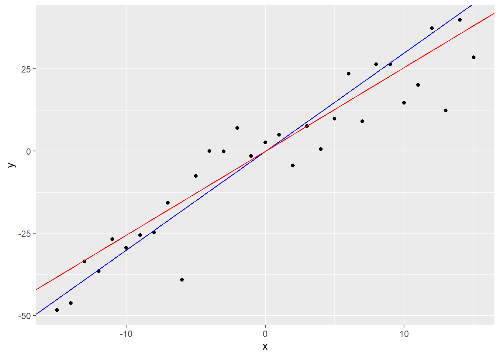
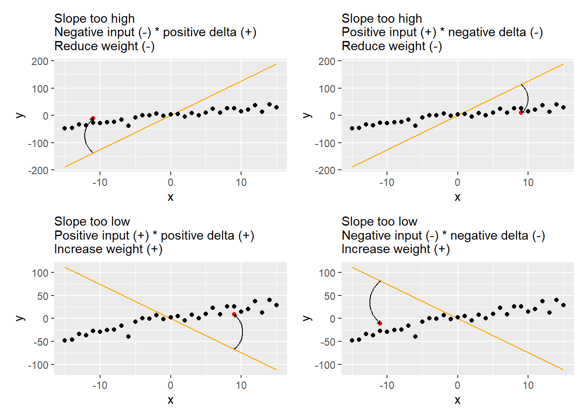
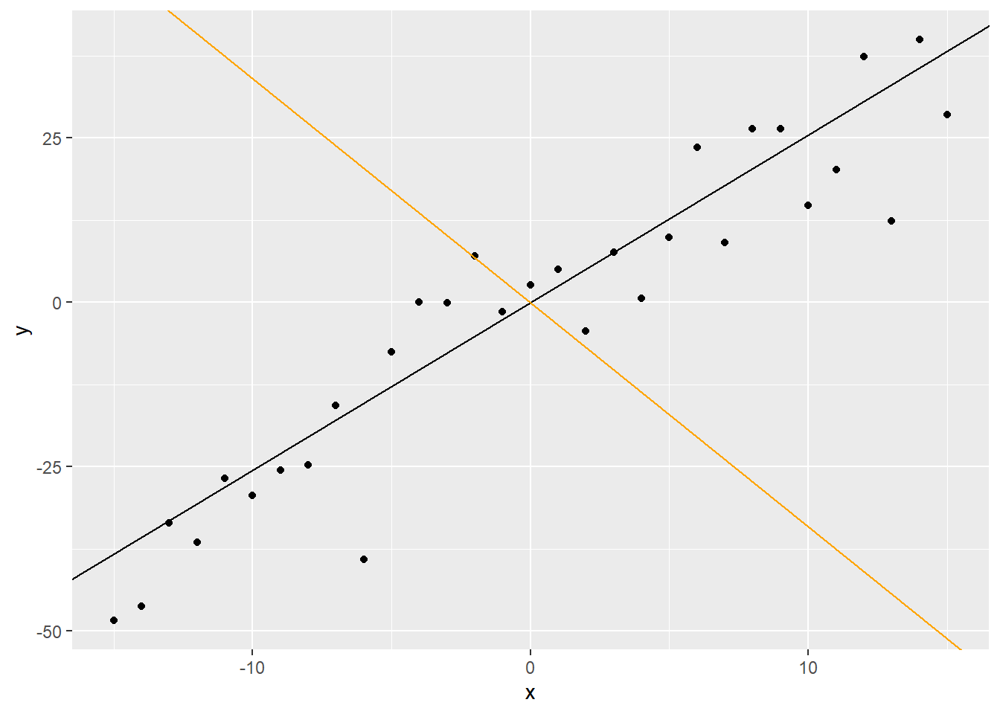
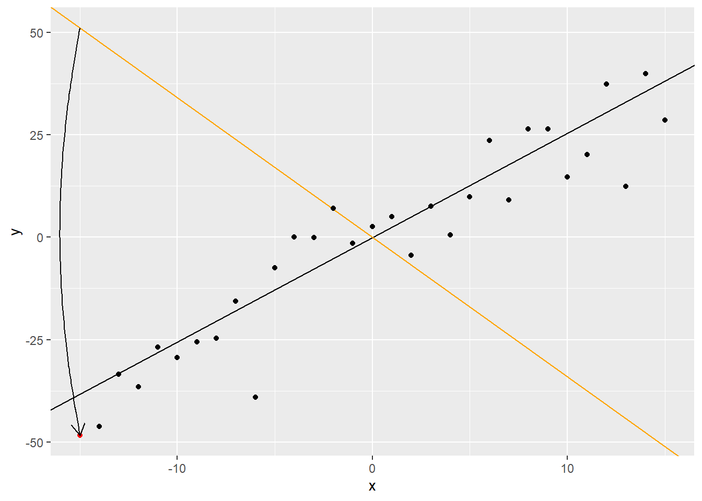
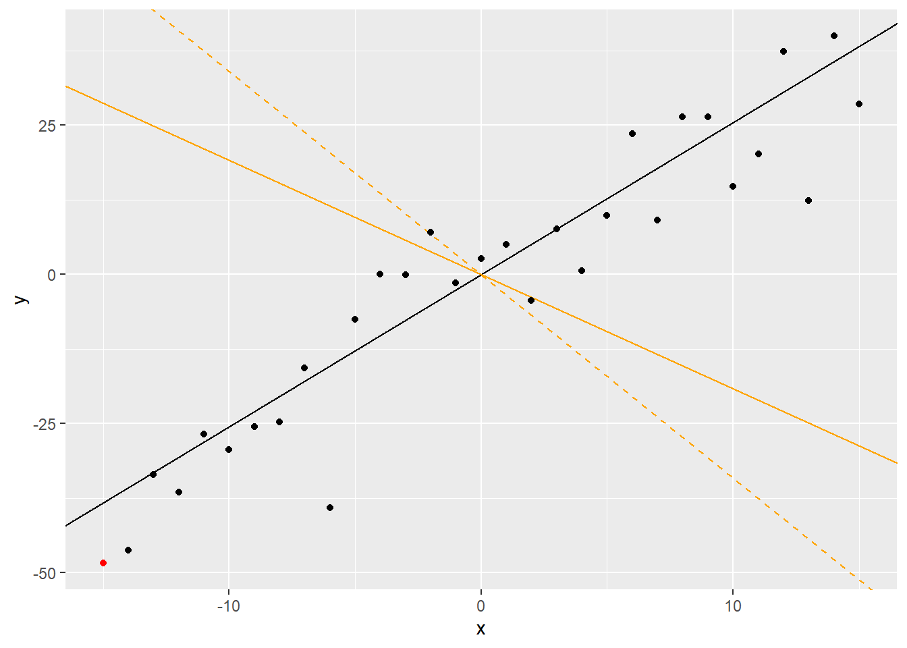

library(tidyverse)
set.seed(128230565)
x_range <- c(-15, 15)
slope <- 3
slope_df <-
tibble(x = x_range[1]:x_range[2]) %>%
mutate(y = rnorm(n(), mean = x * slope, sd = 10))2 Stochastic Gradient Descent for slope
2.1 Generate data distributed normally relative to the slope
Here is the dependence visualized with the blue line representing a true slope and the red line — the sample slope.

2.2 Direction of adjusment based on difference and input

2.3 SDG step by step
First, we make a random guess about the slope.
# generate a random initial guess about the mean
set.seed(8739172)
current_guess_at_slope <- rnorm(1, sd = 10)It is visualized as an orange line, whereas the sample mean (not the true sampling distribution mean!) is black.

Next we pick a first (or, it could be random) data point and compute difference between it and our guess about the mean.
# pick a random data point
ipick <- 1
# computing squared error and difference
prediction <- current_guess_at_slope * slope_df[['x']][ipick]
error <- (prediction - slope_df[['y']][ipick])^2
delta <- prediction - slope_df[['y']][ipick]The difference and the direction in which we need to adjust our guess are depicted as the arrow.

Finally, we move our guess by a small amount to minimize the error.
alpha <- 0.001
current_guess_at_slope <- current_guess_at_slope - alpha * delta * slope_df[['x']][ipick]Here, the old guess is marked by a dashed line. Our step is probably too big but here I made alpha largish to make seeing the difference easier.

2.4 SDG over all points and many epochs
# learning rate
alpha <- 0.0001
# generate a random initial guess about the mean
set.seed(8739172)
current_guess_at_slope <- rnorm(1, sd = 10)
for(epoch in 1:30){
total_error <- 0
for(ipick in 1:nrow(slope_df)){
# computing squared error and difference
prediction <- current_guess_at_slope * slope_df[['x']][ipick]
error <- (prediction - slope_df[['y']][ipick])^2
total_error <- total_error + error
delta <- prediction - slope_df[['y']][ipick]
# adjusting our guess
current_guess_at_slope <- current_guess_at_slope - alpha * delta * slope_df[['x']][ipick]
}
# computing and reporting error
cat(glue::glue("Epoch: {epoch}. Error: {round(total_error, 1)}. Estimate: {round(current_guess_at_slope, 2)}. Sample slope: {round(sample_slope, 2)}"), "\n")
}